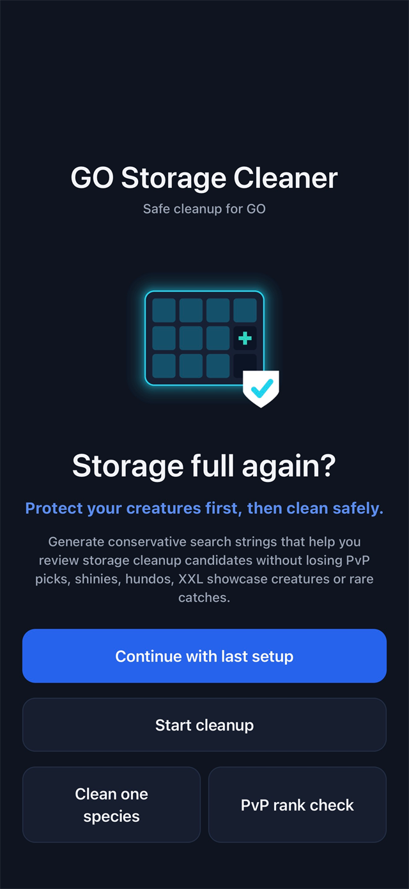
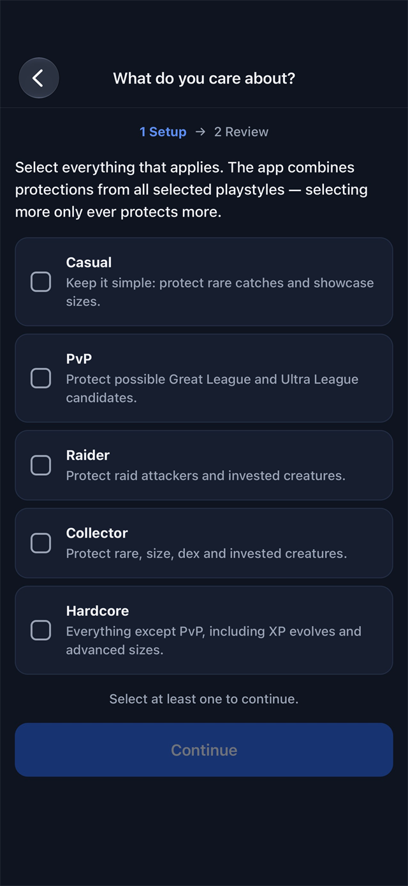
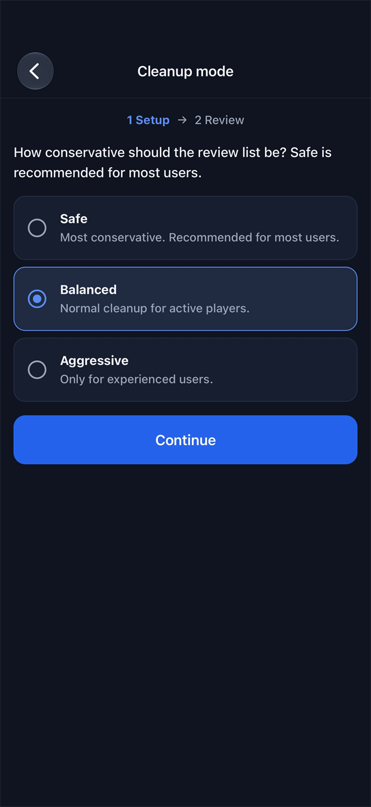
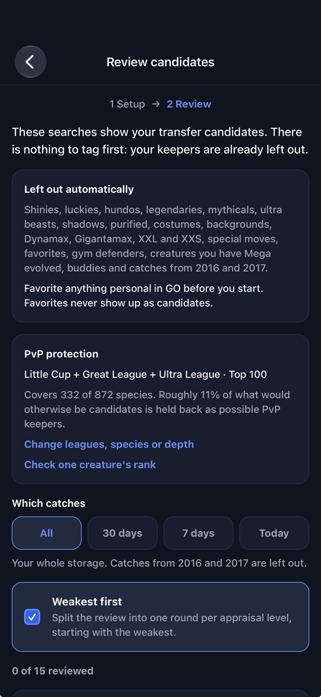

Clean up without the panic
Storage full again? GO Storage Cleaner helps you review transfer candidates more carefully, so you never let go of the Pokémon that matter.
Tell it how you play
Pick your playstyles and how careful the cleanup should be. That is the whole setup: there are no tags to create. Shinies, legendaries, luckies, hundos, rare and event Pokémon, background Pokémon and favorites are always left out.
Paste and review
It generates conservative search strings you copy and paste into Pokémon GO. If you play PvP, the best IV spreads of each species are left out too. You always review the results manually before transferring anything.
What you get
A search string built from your choices. Copy it, paste it into the search bar in Pokémon GO, and review what shows up.
0*,1*,2*&!favorite&!defender&!shiny&!legendary&!mythical&…&!shadow&!lucky&…&!4*&…
- Copy the string in the app
- Paste it into the search bar in Pokémon GO
- Review the candidates before you transfer anything
Shortened example. Favorites are left out, along with shinies, legendaries, luckies, hundos and other rare categories. With the PvP playstyle, likely PvP keepers are left out as well.
See the workflow
Two choices, then your review strings.




What's inside
A deliberately cautious workflow, built around not losing anything by accident.
- Conservative cleanup workflow
- No tags to create: keepers are left out by the search strings
- PvP protection for Little Cup, Great League & Ultra League
- PvP rank check for a single Pokémon
- Clean one species after an event day
- Review only recent catches, or the weakest first
- Raid protection with selectable IV strictness
- Search tips: useful searches to copy
- Rare / event / background Pokémon protection
- No login · no account access · no automation
Safe by design
GO Storage Cleaner is a planning tool. It never touches your game.
Questions
Does GO Storage Cleaner access my Pokémon GO account?
No. There is no login and no connection to the game. The app only generates search strings that you copy and paste into Pokémon GO yourself.
Does it transfer Pokémon for me?
No. The final search shows transfer candidates for you to review. Every transfer is your own decision, made manually in the game.
How much does it cost?
The app is free to download. Generating search strings requires Pro: $2.99 per month, $14.99 per year, or $29.99 as a one-time purchase (US prices; local prices are shown in the App Store).
Do I have to create tags in Pokémon GO?
No. The search strings leave your keepers out by themselves: favorites, shinies, legendaries, luckies, hundos and other rare or invested Pokémon never show up as candidates. If you already use tags, you can add them as extra exclusions.
Which language does it use?
English. The app is in English, and the search strings use English search keywords, so set the game language to English when you paste them.
Which devices does it run on?
iPhone. GO Storage Cleaner is made for iPhone and is available in the App Store.
Storage full again?
Clean with a clear head.